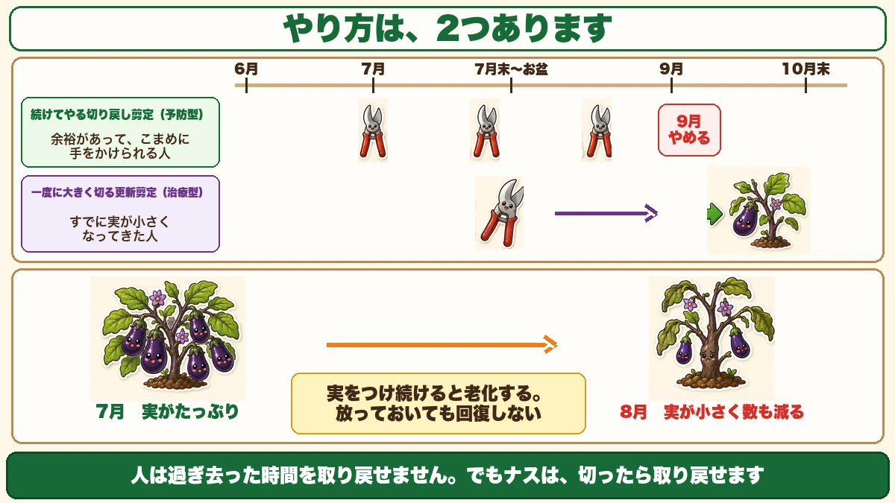
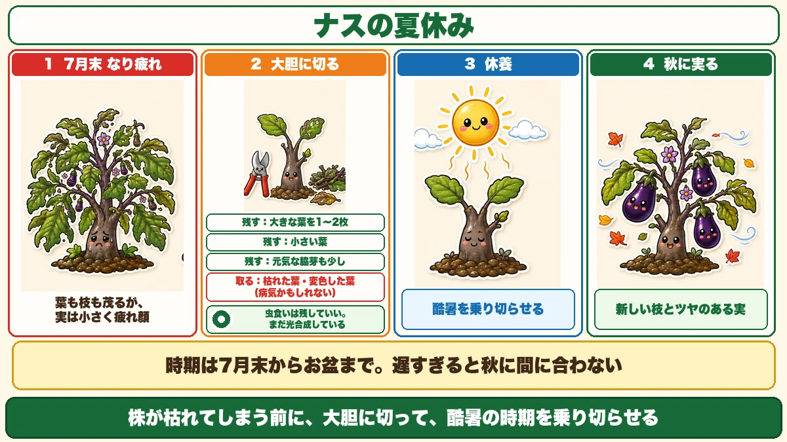
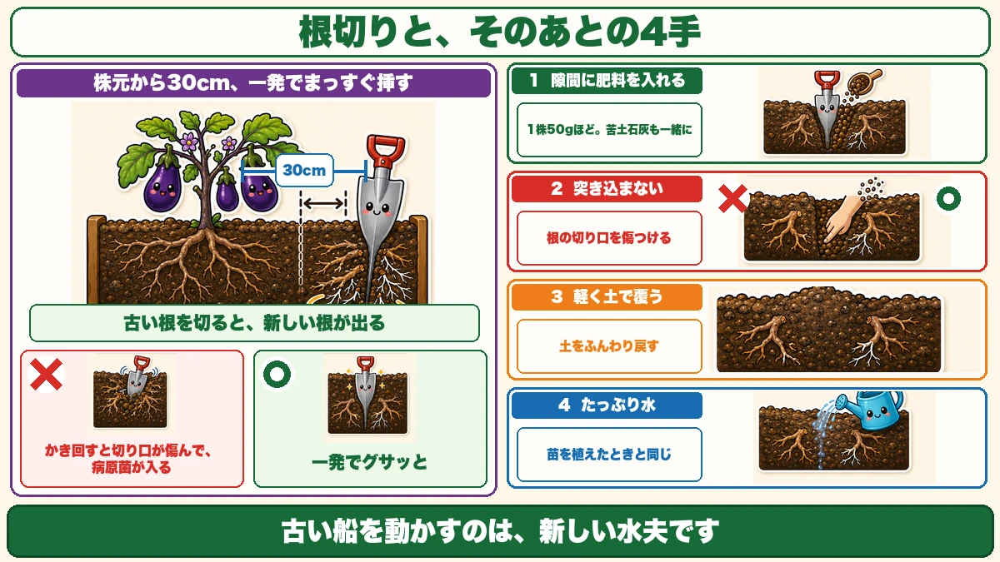
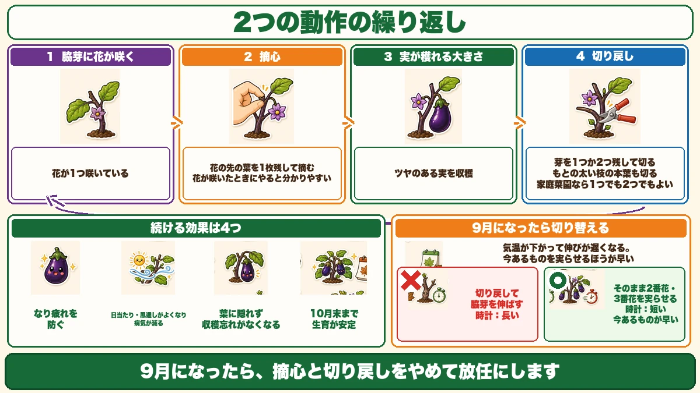

ナスは、切ったら取り戻せます🍆 7月末からお盆までの夏休み

🗨️「8月に入ったら、急に実が小さくなった」
🗨️「もう終わりかな、と抜いてしまった」
🗨️「秋ナスって、どうやって穫るの？」
どうも、8150（えいこう）です🌱 家庭菜園歴8年、理科の教員免許を持っていて、有機・無農薬で野菜を育てています。
7月の後半になると、ナスの様子が変わってきます。
実が小さい。色が薄い。数が減る。★「もう終わりだ」と思って抜いてしまう方が多いのですが、待ってください。
先に、この記事でいちばん言いたいことを言っておきます。
★ナスは、切ったら取り戻せます。
これができる野菜は、実はそう多くありません☺️
📖 この記事の目次
★なり疲れという現象
夏バテです
8月ごろに起きるこの状態を、★なり疲れと言います。
実をつけ続けたことで、株が消耗しています。人でいう夏バテですね。
そして大事なことがあります。
★放っておいても、回復しません。
「そのうち涼しくなれば戻るだろう」と思って待っても、戻らない。★何かしないと、そのまま終わります。
★実をつけると、老化します
これは理屈があります。
★どんな野菜でも、花を咲かせて実をつけると老化します。
摘心をしても、脇芽をかいても、追肥を欠かさなくても。★経年劣化は避けて通れません。
野菜の目的はタネを残すことなので、実をつけるという行為そのものが、株にとっては大仕事です。★それを何十回も繰り返せば、疲れます。
★★でも、ナスは違います
ここからが本題です。
★人は、過ぎ去った時間を取り戻せません。でもナスは、切ったら取り戻せます。
私が読んだ農家さんの言葉です。うまい言い方だと思いました。
★切って、休ませて、また実らせる。ナスにはそれができます。
やり方は、2つあります

①続けてやる「切り戻し剪定」
7月以降、★こまめに少しずつ切っていく方法です。
なり疲れを起こす前に、常に負担を軽くしておく。★予防型です。
②一度に大きく切る「更新剪定」
★7月末からお盆にかけて、大胆に切り戻す方法です。
すでに疲れてきた株を、★一度休ませて回復させる。★治療型ですね。
どちらを選ぶか
★どちらも必ずやらなければいけないものではありません。
- ★余裕があって、こまめに手をかけられる → ①切り戻し剪定
- ★すでに実が小さくなってきた、まとめて手をかけたい → ②更新剪定
私は、★まず②から試すことをおすすめします。効果がはっきり見えるからです。
②★★更新剪定 ── ナスの夏休み
目的は「休養」です
まず、こちらからお話しします。
★目的は、株を休ませることです。

★株が枯れてしまう前に、大胆に切って、酷暑の時期を乗り切らせる。
そして★エネルギーを回復させて、気温が落ち着いたころに秋の実をつけてもらう。
★ナスの夏休み、という言い方がぴったりだと思います。
★時期は、7月末からお盆まで
いつやるかが大事です。
★7月末から、お盆まで。
理由は2つあります。
- ★この時期は高温と熱波で、株がいちばん疲れる
- ★切ってから回復するまでの時間が要る
★遅すぎると、秋に間に合いません。お盆を過ぎたら、無理にやらないほうがいいと思います。
どこまで切るか
思い切りが要ります。
★大胆に、ダイナミックに切ってください。
ただし、★全部切ってはいけません。保険として残すものがあります。
★残すもの
- ★大きな葉を1〜2枚
- ★小さい葉
- ★元気な脇芽も、少し
★取り除くもの
- ★枯れた葉、変色した葉（★病気かもしれません）
★虫食いの葉は、残していい
無農薬でやっていると、葉に虫食いの穴があります。
★これは残して構いません。
穴が開いていても、その葉は光合成をしています。★見た目で切らないでください。
★切るのは「枯れた・変色した」葉です。虫食いは、まだ働いています。
★★根切り ── セットでやります
必須ではありませんが、効きます
更新剪定と一緒にやると効果が上がるのが、★根切りです。
★必ずやる必要はありません。でも、やると違います。

やり方は、一発です
★株元から30cmほど離れたところに、スコップを深く強く突き刺します。
そして★根をブチッと切ります。
ここに★いちばん大事なコツがあります。
★ゴソゴソかき回さないでください。一発でグサッと決めます。
★かき回すと、病気になります
理由があります。
★何度もかき回すと、切り口が傷んで、そこから病原菌が入ります。
前に病気の話をしたとき、★傷口は病気の入口だとお伝えしました。★根の切り口も同じです。
★スパッと1回。これがコツです。
なぜ根を切ると、元気になるのか
不思議に思われるかもしれません。切ったら弱るのでは、と。
★逆です。
★古い根を切ると、新しい根が出てきます。
前に「根は先端でしか吸えない」という話をしました。★古くなった根は、もう吸う力が落ちています。
そこを切ると、株は新しい根を伸ばそうとします。★新しい先端が増える＝吸う口が増えるということです。
★古い船を動かすのは、新しい水夫です。
★★切ったあとは、必ず追肥
根切りをしたら、必ずセットでやることがあります。
★スコップを入れた隙間に、肥料を入れてください。
- ★ぼかし肥料か化成肥料を、1株50gほど
- ★苦土石灰も一緒に（この時期はマグネシウムとカルシウムが不足します）
★突き込まないでください
ここも大事です。
★肥料はパラパラとまくだけ。突き込まないでください。
突き込むと★土をほじくり返して、せっかくの根の切り口を傷つけます。
まいたら★軽く土で覆うだけ。それで十分です。
★★そのあと、たっぷり水
最後です。これを忘れないでください。
★スコップを入れた跡に沿って、たっぷり水をやります。
★苗を植えたときと同じです。
前に定植の話をしたとき、★「穴に先に水を注ぐ」とお伝えしました。★根が新しく伸びていく場所を、あらかじめ湿らせておく。★考え方はまったく同じです。
マルチを張っているなら、★水をやってからマルチを戻して完了です。
★正直に言うと、こわい作業です
デメリットもあります
いいことばかり書くのは、フェアではありません。★正直にお伝えします。
★1. 収穫が一時的に止まります
★せっかく育っているいい部分を、全部切ってしまいます。次に穫れるまで時間がかかります。
★2. 切りすぎると、枯れます
★これが本当のリスクです。全部切ってしまうと、株が回復できません。
だから★保険として葉を1〜2枚、脇芽も少し残す。ここは守ってください。
★1株だけ、試してみる
不安な気持ちは、よく分かります。私も最初はためらいました。
だから、こうしてください。
★1株だけ、試してみる。
★全部やる必要はありません。1株だけ切り戻して、残りはそのまま。★2週間後に見比べれば、答えが出ます。
うまくいけば来年から全部やればいいですし、だめでも1株の損で済みます。
★やってみないと分からない、というのは本当です。そして★やってみると、意外と簡単です。
①切り戻し剪定 ── こまめにやる方法
2つの動作の繰り返しです
こちらは、7月以降ずっと続けるやり方です。

★手順1：摘心（花が咲いたとき）
- 脇芽に花が咲きます
- ★その花の先の葉を1枚残して、先を摘みます
★花が咲いたときにやるのが分かりやすいです。実がついてからでは、どこを切るか分かりにくくなります。
★手順2：切り戻し（実が穫れるとき）
- その花が実になって、収穫できる大きさになります
- 穫るときに、★脇芽から出ている芽を1つか2つ残して切ります
- ★そのとき、もとの太い枝の本葉も切ります
★この2つを、ずっと繰り返します。
家庭菜園なら、2つ残していい
★農家さんは、芽を1つだけ残して2つ目以降は摘む方が多いそうです。
★家庭菜園なら、1つでも2つでも構いません。
収穫量を最大にしたいわけではないので、★管理しやすいほうを選んでください。
効果は4つあります
続けると、こうなります。
- ★なり疲れを防げる
- ★枝が減って日当たり・風通しがよくなり、病気のリスクが減る
- ★ナスが葉に隠れないので、収穫忘れがなくなる
- ★実をつける負担が減って、10月末まで生育が安定する
3つ目は地味ですが、実感があります。★葉に隠れて巨大化したナスを見つけたときの、あの気持ちがなくなります。
★下葉も、随時切る
剪定と一緒に、★収穫が終わった下のほうの葉は切っていってください。
前に誘引の話でお伝えしたとおり、★下の葉はもう役割を終えています。★泥はねも防げます。
★★9月になったら、やめます
ここが意外です
大事な切り替えがあります。
★9月になったら、摘心と切り戻しをやめて、放任にしてください。
ずっと続けるものだと思っていたので、これは意外でした。
理由は、気温です
★9月からは気温が下がって、伸びが遅くなります。
すると、こうなります。
- 切り戻して脇芽を伸ばす → ★伸びるのに時間がかかりすぎる
- そのまま置いて2番花・3番花を実らせる → ★こちらのほうが早い
★秋は「新しく伸ばす」より「今あるものを実らせる」ほうが有利になります。
ただし、混んでいたら切る
例外はあります。
★枝が混み合っていると感じたら、弱い枝や実のついていない枝は切ってください。
風通しの話は、季節を問わず大事です。
抜く前に、1回だけ
この記事の要点
- ★8月に実が小さくなるのは「なり疲れ」＝夏バテ
- ★★放っておいても回復しない
- ★どんな野菜も、実をつけると老化する。経年劣化は避けられない
- ★★でもナスは、切ったら取り戻せる
- やり方は2つ。★続けてやる切り戻し剪定（予防型）と、★一度に大きく切る更新剪定（治療型）
- ★★更新剪定の時期は7月末からお盆まで。★遅すぎると秋に間に合わない
- 目的は★休養。★株が枯れる前に切って、酷暑を乗り切らせる
- 残すもの＝★大きな葉1〜2枚／小さい葉／元気な脇芽も少し
- 取り除くもの＝★枯れた葉・変色した葉（病気かもしれない）
- ★虫食いの葉は残していい。★穴が開いていても光合成はしている
- ★★根切りは、株元から30cmにスコップを深く突き刺して一発で
- ★ゴソゴソかき回さない。★切り口が傷んで病原菌が入る
- ★古い根を切ると新しい根が出る。★新しい先端が増える＝吸う口が増える
- ★★根切りのあとは必ず追肥。★1株50gほど、苦土石灰も一緒に
- ★突き込まない。★根の切り口を傷つける。まいたら軽く土で覆う
- ★★そのあとたっぷり水。★苗を植えたときと同じ
- デメリット＝★収穫が一時的に止まる／★切りすぎると枯れる
- ★不安なら1株だけ試す。★2週間後に見比べれば答えが出る
- 切り戻し剪定は★①花が咲いたら葉1枚残して摘心 ★②実が穫れたら芽を1〜2つ残して切る の繰り返し
- ★花が咲いたときにやると分かりやすい
- ★家庭菜園なら芽は1つでも2つでもよい
- 効果＝★なり疲れ防止／★病気が減る／★収穫忘れがなくなる／★10月末まで安定
- ★収穫が終わった下葉は随時切る
- ★★9月になったら、摘心と切り戻しをやめて放任にする
- 理由は★気温が下がって伸びが遅くなるから。★今あるものを実らせるほうが早い
- ★ただし混んでいたら、弱い枝・実のついていない枝は切る
全部やろうとしなくて大丈夫です。まずは★1株だけ、思い切って切ってみてください。抜いてしまう前に、1回だけ試す価値があります🍆
次回は、お盆の話。旅行や帰省で家を空けるとき、畑をどうするかをお話しします🏖️
ここまで読んでくださって、ありがとうございました。
剪定ばさみ
太い枝を切るので、切れ味が要ります。切り口がつぶれると、そこから傷みます。


移植ごて
根切りに使います。株元から30cmのところへ、まっすぐ差し込むだけ。

発酵油かす
切ったあとの追肥です。ここを飛ばすと、秋に戻ってきません。
![[商品価格に関しましては、リンクが作成された時点と現時点で情報が変更されている場合がございます。]](https://hbb.afl.rakuten.co.jp/hgb/55e75fe5.20db4cd1.55e75fe7.d1ec32cc/?me_id=1194164&item_id=10000908&pc=https%3A%2F%2Fthumbnail.image.rakuten.co.jp%2F%400_mall%2Fgardening%2Fcabinet%2Fhiryousennyouhiryo%2Fomakase-1.jpg%3F_ex%3D240x240&s=240x240&t=picttext "[商品価格に関しましては、リンクが作成された時点と現時点で情報が変更されている場合がございます。]")
苦土石灰
この時期はマグネシウムとカルシウムが不足します。追肥と一緒に。
![[商品価格に関しましては、リンクが作成された時点と現時点で情報が変更されている場合がございます。]](https://hbb.afl.rakuten.co.jp/hgb/55e75fe5.20db4cd1.55e75fe7.d1ec32cc/?me_id=1194164&item_id=10000709&pc=https%3A%2F%2Fthumbnail.image.rakuten.co.jp%2F%400_mall%2Fgardening%2Fcabinet%2Fikou_20091001_001%2Fimg1043676078.jpg%3F_ex%3D240x240&s=240x240&t=picttext "[商品価格に関しましては、リンクが作成された時点と現時点で情報が変更されている場合がございます。]")
あわせて読みたい